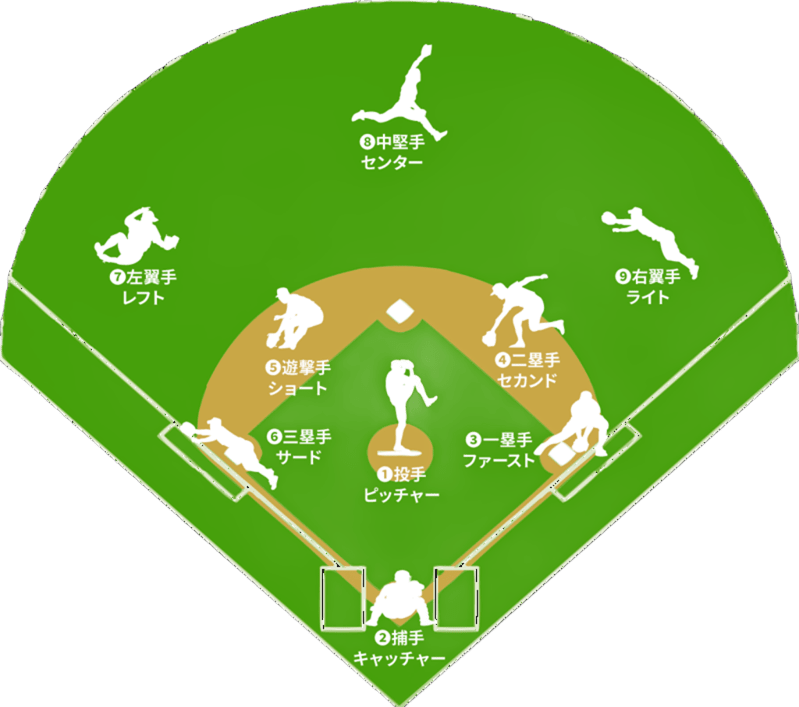

出場人数
「スターティングメンバー（スタメン）」としてフィールドに出場します。その他にも 「ベンチ入り」できる選手おり、この選手たちは交代要員として試合途中から状況に応じて出場します。

試合時間
今の少年野球は約１時間～２時間程度とされています。 条件により、9回未満で試合が終了することもあります。 例えば天候が悪くなり試合ができなくなってしまった 場合や、点差によるコールドなどがあります。 9回までに両リーム点差が同じの場合、勝敗が決まるまで追加イニングを行います。

「スターティングメンバー（スタメン）」としてフィールドに出場します。その他にも 「ベンチ入り」できる選手おり、この選手たちは交代要員として試合途中から状況に応じて出場します。

今の少年野球は約１時間～２時間程度とされています。 条件により、9回未満で試合が終了することもあります。 例えば天候が悪くなり試合ができなくなってしまった 場合や、点差によるコールドなどがあります。 9回までに両リーム点差が同じの場合、勝敗が決まるまで追加イニングを行います。